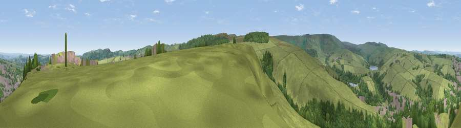

Viewpoint near Hinchliffe Mill
#14203 in England · top 21% of its area beats it · near Hinchliffe MillWhere it is
The exact computed spot (SE 12975 06175). Click the marker for map links.
The view, rendered

A 360° render of this exact spot computed from the terrain model, tree cover and land cover — summer colours, afternoon light, calibrated against photographs of famous viewpoints. Real trees, hedges and buildings will differ in detail.
The panorama
Grey silhouette: terrain skyline in each direction (720 bearings, Earth curvature and refraction included). Dashed green: skyline with trees (+15 m) and buildings (+8 m) as obstacles. Blue strip: how far the ground is visible on each bearing.
Where the view opens
Wedge length = distance to the farthest visible ground on that bearing (vegetation-aware). Rings at 10, 25 and 50 km.
What fills the view
75% grassland · 19% woodland · 5% built-up
Angular shares of the visible panorama (visual magnitude), not map area. Landscape diversity 0.31 (0–1 Shannon).
Key numbers
More beautiful places nearby
The staircase of upgrades: each row has a higher view potential than everything closer. Driving times are estimates from straight-line distance, calibrated against real road routing — check an actual route before setting out.
| Place | Direction | Drive | Score |
|---|---|---|---|
| Viewpoint near Hade Edge | S · 2 km | ~5 min | 62.5 |
| Viewpoint near Lane | WSW · 4 km | ~8 min | 66.0 |
| Viewpoint near Lane | WSW · 4 km | ~8 min | 68.5 |
| Cheese Gate Nab | E · 4 km | ~10 min | 69.9 |
| Viewpoint near Jackson Bridge | ENE · 5 km | ~11 min | 73.5 |
| Viewpoint near Greenfield | WSW · 13 km | ~24 min | 76.0 |
| Viewpoint near Carrbrook | WSW · 15 km | ~27 min | 77.1 |
| Viewpoint near Edenfield | WNW · 33 km | ~51 min | 77.5 |
53.55205, -1.80563 · source: screening · position refined by local search. Computed location — check access rights before visiting.